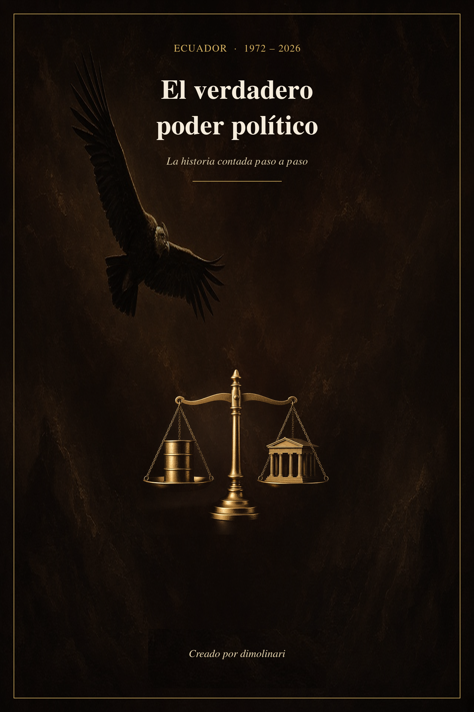

LUF
LUF
Libro · primera edición pública
El verdadero poder político
Ecuador 1972–2026. La historia contada paso a paso.
Creado por dimolinari
Esta edición en PDF cuenta la historia hasta 2023; los datos públicos de Lufy siguen hasta 2026.
Medio siglo de historia del Ecuador: desde el primer barril de petróleo, en 1972, hasta el final del gobierno de Guillermo Lasso, en 2023. Un libro sobre cómo se han cruzado el poder económico y el poder político: decretos, bancos, crisis, contratos, cárceles y tribunales.
Paga lo que quieras: puedes descargarlo gratis o pagar lo que te parezca justo. Lo sugerido son 3 USD. Lo que pagues ayuda a seguir investigando. El texto completo no se publica en esta web.
La compra y la descarga se hacen en Ko-fi. Esta web no recibe ni guarda tus datos.
El libro en 30 segundos
- 1Del petróleo en 1972 a la muerte cruzada del 17 de mayo de 2023.
- 2Cada hecho lleva su fuente. No hay diálogos ni escenas inventadas.
- 3No acusa: quien no tiene sentencia firme se presume inocente.
- 4PDF de 165 páginas. Paga lo que quieras (sugerido: 3 USD) o lee la muestra gratis.
La historia que cuenta
En 1971 el petróleo le dejó al Estado ecuatoriano unos 44 millones de sucres. En 1974, más de 3.300 millones. Un país no cambia a esa velocidad sin que alguien decida qué hacer con la diferencia. El libro empieza ahí y sigue una sola pregunta durante cincuenta años: ¿cómo aprendieron el poder económico y el poder político a sentarse a la misma mesa?
Unas veces la mesa fue un decreto. Otras, un banco que había que salvar, una deuda privada que pasó a ser pública, una ley financiera, un fallo judicial o una puerta de cárcel. El recorrido pasa por la deuda de los años setenta, la sucretización de 1983, las reformas financieras de los noventa, el feriado bancario de 1999, la dolarización del año 2000, la reorganización de la Corte Suprema en 2004–2005, la década de 2007 a 2017 y los gobiernos de 2017 a 2023, hasta la «muerte cruzada» de mayo de 2023.
No es una novela. Se lee como una, y es a propósito: una historia se entiende mejor cuando se la puede seguir. Pero no hay nada inventado: no hay diálogos imaginados, ni pensamientos atribuidos, ni escenas decoradas. Cada capítulo termina con «Cómo terminó» (el estado de cada proceso), «Lo que todavía no sabemos» y la lista de fuentes.
Una línea de tiempo del PDF
Seis momentos del relato, que llega hasta el 17 de mayo de 2023. El detalle está en cada capítulo.
- Empieza el petróleo. Capítulo 1
- La sucretización. Capítulo 2
- El feriado bancario. Capítulo 8, completo en la muestra gratis.
- La dolarización: 25.000 sucres por dólar. Capítulo 9
- La década con más expedientes. Capítulo 12
- La muerte cruzada. Capítulo 14
Capítulo por capítulo
El libro abre con «Antes de empezar», donde explica cómo leer lo que se afirma, lo que el libro no hace y cómo se hizo. Después vienen los 14 capítulos:
- 1972–1979 · Gobiernos militares: Rodríguez Lara y el Consejo Supremo de Gobierno
Capítulo 1. Los generales y el barril
Empieza el petróleo. Los ingresos petroleros del Estado pasan de unos 44 millones de sucres en 1971 a más de 3.300 millones en 1974. Quién decidió qué hacer con esa riqueza, cómo el país se volvió rico y endeudado a la vez, y cómo la cuenta quedó a nombre de todos cuando se acabó la bonanza.
- 1979–1984 · Jaime Roldós y Osvaldo Hurtado
Capítulo 2. El dólar que se volvió sucre
El regreso a la democracia coincide con la crisis de la deuda. En 1983 llega la «sucretización»: el Banco Central asume deudas en dólares de empresas privadas y de otras entidades, incluidos clubes deportivos, y las convierte en deudas en sucres.
- 1984–1988 · León Febres-Cordero
Capítulo 3. Cien sucres por dólar
En octubre de 1984 la Junta Monetaria congela en 100 sucres por dólar el cambio para quienes tenían deuda sucretizada. Cuatro años después el dólar costaba 254. La diferencia la puso el Banco Central. El capítulo sigue ese mecanismo y otros episodios del período, con su desenlace.
- 1988–1992 · Rodrigo Borja
Capítulo 4. La puerta que quedó abierta
La Ley de Régimen Monetario y Banco del Estado de 1992 da autonomía al Banco Central y lo convierte en prestamista de última instancia de la banca privada. Parecía un tecnicismo; el libro explica por qué importa para lo que vino después.
- 1992–1996 · Sixto Durán Ballén y Alberto Dahik
Capítulo 5. Las leyes de la apertura
Las reformas de la década: la Ley de Mercado de Valores (1993), la Ley de Modernización del Estado (1993) y la Ley General de Instituciones del Sistema Financiero (1994), que cambió las reglas de la supervisión bancaria. También el juicio político al vicepresidente, su salida del país y cómo, años después, la justicia revisó el origen del proceso.
- 1996–1997 · Abdalá Bucaram
Capítulo 6. Seis meses en Carondelet
Un gobierno de seis meses que termina el 6 de febrero de 1997, cuando el Congreso declara al presidente «incapaz mental» para gobernar. El capítulo cuenta los procesos judiciales abiertos después y cómo terminó cada uno.
- 1997–1998 · Rosalía Arteaga y Fabián Alarcón
Capítulo 7. La sucesión desplazada
Dos personas para una misma silla: la vicepresidenta asume la presidencia por menos de dos días y el Congreso designa a un presidente interino. Una disputa constitucional sobre quién debía gobernar.
- 1998–2000 · Jamil Mahuad
Capítulo 8. El feriado bancario
El 8 de marzo de 1999 se anuncia un feriado bancario «de 24 horas» que dura cinco días. El 11 de marzo, el Decreto Ejecutivo 685 congela por un año los depósitos. Caen bancos, se pierde la confianza en el sucre y el país llega a la dolarización. Este capítulo completo está en la muestra gratis.
- 2000–2003 · Gustavo Noboa
Capítulo 9. Veinticinco mil
El 13 de marzo de 2000, el Registro Oficial fija el canje en 25.000 sucres por dólar: fin de la moneda nacional. Cómo se reordenó el sistema después del naufragio: la Agencia de Garantía de Depósitos, los bonos, las reformas legales y los juicios sobre la deuda.
- 2003–2005 · Lucio Gutiérrez
Capítulo 10. Tres regresos y una caída
En diciembre de 2004 se reorganiza la Corte Suprema. El 31 de marzo de 2005, su presidente deja sin efecto los juicios de tres exgobernantes. Veinte días después, tras las protestas de abril, el presidente que había hecho posible esa Corte deja el poder.
- 2005–2007 · Alfredo Palacio
Capítulo 11. El interino y las cuentas pendientes
En octubre de 2005 el Ecuador debía al exterior USD 10.390 millones, y pagar esa deuda se llevaba más del 40 % del presupuesto. La idea de auditar la deuda con participación ciudadana, que años después se convertiría en la comisión de auditoría de 2008.
- 2007–2017 · Rafael Correa
Capítulo 12. Diez años de expedientes
La década con más expedientes del libro: petróleo, contratación pública, obras hidroeléctricas, prensa, seguridad social, cárceles y la reconstrucción tras el terremoto de 2016. Para cada caso, el libro distingue sentencias firmes, procesos abiertos, absoluciones y prescripciones, con su estado a septiembre de 2026.
- 2017–2021 · Lenín Moreno
Capítulo 13. Papeles que abren puertas
La ruptura con el gobierno anterior, la disputa por el Consejo de Participación Ciudadana y Control Social, octubre de 2019, la pandemia y la contratación de emergencia, las cárceles y los grandes grupos económicos.
- 2021–2023 · Guillermo Lasso
Capítulo 14. La muerte cruzada
Los hábeas corpus investigados en el caso que la Fiscalía llamó Plaga, los organismos de control, el caso Encuentro, el juicio político y el Decreto 741 del 17 de mayo de 2023, que disolvió la Asamblea («muerte cruzada»). Termina con la campaña anticipada, marcada por el asesinato de un candidato presidencial el 9 de agosto de 2023.
Cómo está hecho
- Cada hecho lleva su fuente: sentencias, registros oficiales, estudios y prensa, en una lista al final de cada capítulo.
- Distingue lo que se sabe de lo que no. Lo que documenta una institución se cuenta como hecho. Lo que publicó la prensa sin documento oficial se marca con «según…». Lo que sostiene una acusación sin sentencia se dice así, con esas palabras.
- No condena a nadie. Toda persona sin sentencia firme es inocente, y así se la trata. Quien fue absuelto es inocente para la ley, y se dice con la misma claridad que una condena.
- Nombra la zona gris sin juzgarla: los casos que terminaron por prescripción, nulidad, amnistía, asilo o fuga. Eso no es culpa ni inocencia; es que la justicia no llegó.
- Protege a quien no es figura pública. Familiares, empleados, testigos y víctimas aparecen solo por su papel.
- Revisión antes de publicar. El texto se revisó pasaje por pasaje y se quitó todo lo que no se podía respaldar con una fuente publicada.
Aviso honesto: el texto se redactó con ayuda de herramientas de inteligencia artificial a partir del archivo de investigación de Lufy, y se revisó antes de publicar.
Para quién es
- Para quien quiere entender de dónde vienen la deuda, la crisis bancaria o la dolarización, y no solo recordar las fechas.
- Para estudiantes, docentes y periodistas que necesitan una cronología con fuentes para seguir investigando.
- Para ecuatorianos dentro y fuera del país que quieren leer medio siglo de historia política en un solo lugar, sin consignas.
Qué edición es esta
Es la primera edición pública, con datos al 23 de septiembre de 2026. El relato llega a la «muerte cruzada» del 17 de mayo de 2023, en el capítulo 14. El gobierno que empezó en noviembre de 2023 queda fuera de esta edición. Los procesos judiciales cambian; lo que el libro dice de cada uno es su estado a esa fecha.
Los primeros gobiernos se cuentan con menos material que los últimos. Ese desequilibrio refleja lo que falta investigar, no lo que ocurrió.
Léelo
¿Quieres probar antes? La muestra gratis trae la introducción y el capítulo 8 completo, sobre el feriado bancario de marzo de 1999 (18 páginas en PDF).
Compartir el libro en X (se abre en otra pestaña)
¿Encontraste un error o una persona mencionada quiere pedir una corrección? Escríbenos desde nuestra página de Ko-fi (se abre en otra pestaña). Cada corrección verificada entra en la siguiente versión. Política de correcciones.
El libro ayuda a Lufy. Los datos siguen gratis.
Lo que pagues por el libro sostiene el archivo. Los hilos de datos de esta web no se cobran.